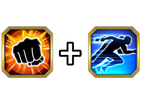
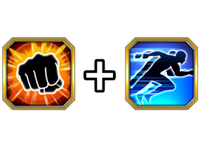

Build recomendada
DATA DE LANÇAMENTO: 26/04/2024

Build recomendada
Se vc stackou muito com esse cara, ele é genial, e se você não stackou nada, ele continua sendo.
O Buuhan lança um SA adicional, tem 50% de chance de desvio e Defesa Ativa, todos permanentes sem condição nenhuma
Além disso, ele ainda lança outro SA adicional nos primeiros 3 turnos dele, e isso é muito quebrado pq em ambos SAs ele aumenta o ATK e DEF em 30% por 4 turnos.
Ou seja, no primeiro turno dele ele já é forte, e no segundo e adiante ele fica AINDA MAIS
A única falha dele é que mesmo dando Supers de mais de 20 milhões de dano, se ele não critar, não vai parecer muito impressionante, mas não é difícil arrumar isso.
Nota dos Links:
09/10
Nota das Categorias:
09/10

Pré-Absorção
Majin Buu (Gotenks)
Você chegou ao fim dessa página!
Obrigado por ler tudo, e fica a vontade pra ver outras